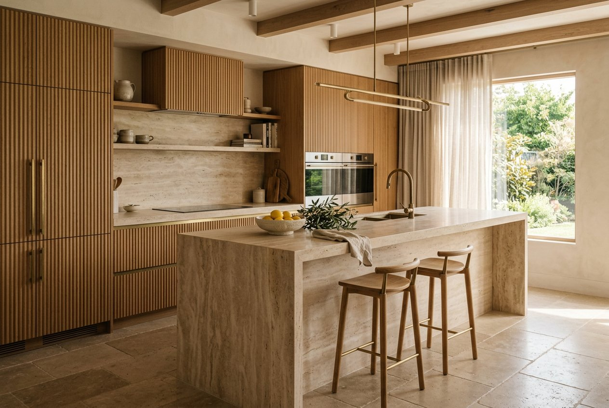
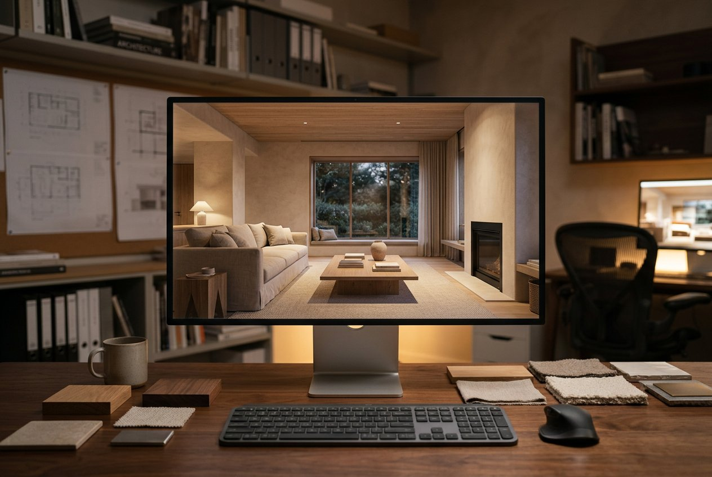

Courtyard Kitchen
Gulberg, Lahore
Specialist
See the space before we build it.

Specialist
See the space before we build it.
Our in-house visualisation team turns drawings into daylight-accurate stills and walkthroughs — the same sun your room will get, at the hour you will use it. Clients approve materials with confidence; nothing goes to production on imagination alone.
Also available as a standalone service for architects, developers and private clients with their own drawings.
How it runs
We walk your space, listen to how you live or work, and agree on scope, budget range and timing before anything is drawn.
1–2 weeksMoodboards, layout options and material palettes. You see two clear directions — never ten half-ideas.
2–3 weeksDrawings, 3D views, joinery details and a fixed quotation. Every finish is chosen and priced before work starts.
3–4 weeksOur workshop fabricates your bespoke pieces while the site team prepares services, surfaces and fittings.
6–12 weeksWhite-glove installation, snagging with you room by room, then a signed handover with warranty documents.
1–2 weeksRelated work